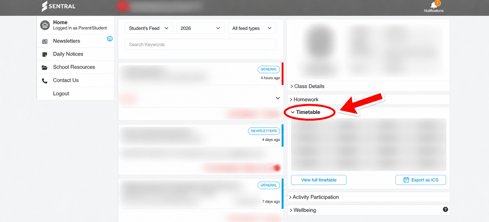

Import your timetableDownload an ICS file from Sentral, then import it here.
01 / Design
Preview changes before saving Want more themes? Send feedback ↗
02 / Timetable
Choose your Sentral ICS file, check the classes, then Apply changes to save.
Your timetable is read on this device to show classes, rooms, teachers and times. Apply saves an encrypted local copy. Nothing is sent to a server. Privacy policy
Stored only in this browser. Re-import when your timetable changes. No Sentral login or automatic sync.
Doesn’t work with your timetable? Ask for help ↗
03 / Display
Keep your countdown open while you work.
Press Esc for page fullscreen or F11 for a fullscreen window. The toolbar popup closes when it loses focus; use a tab to keep Afterbell visible.
04 / Help · Import your timetable
Your school’s Sentral portal may look different.
Choose Student & sign in
Open your school's official Sentral portal, choose Student, then sign in with your school account. Afterbell does not need your login.

Find your timetable
On the Home dashboard, find the panel labelled with your name and Timetable. Click the heading or arrow to expand it.

Export as ICS
Click Export as ICS near View full timetable. Save the downloaded .ics file, usually in Downloads. Do not choose a PDF or screenshot.

Import into Afterbell
Open Settings → Timetable → Import timetable. Choose the downloaded .ics file. Review the imported classes in the preview, then click Apply changes to save.
Check & make it yours
Check the school time zone and today's classes. Choose a clock style in Design. Import a new export after your timetable changes; it replaces the saved timetable.
Common questions
No export link? Try the student portal in a desktop browser and expand Timetable. If your school has disabled export, ask the school for an ICS timetable.
No class right now? Between classes, Afterbell shows the next class. Use the date picker to check another day. If the export has ended, import a newer one.
Wrong times? Check the school time zone under Timetable and your computer's clock.
Safe to share? Your ICS file contains personal timetable information, so keep it private.
Click any tutorial image to see it larger.
Still stuck? Ask for help ↗
05 / Alerts
Get a reminder before each class, even with Afterbell closed. Enable reminders, choose your settings, then Apply. Chrome will ask for notification/sound permissions.
Class details can appear on your lock screen if enabled. Leave them hidden for a discreet reminder. Sound volume affects Afterbell tones and uploads; system sound uses your OS volume. Afterbell tones are browser audio and may still play while Do Not Disturb hides notification banners.
Chrome must be running. Sleeping devices, Chrome scheduling and Do Not Disturb can delay or suppress alerts. A missed reminder may appear after waking if the class has not started.
06 / Privacy
Afterbell only uses your timetable and chosen background on this device. No analytics, ads, accounts, data sale or cloud sync. Core permissions are storage and alarms. Notifications and background audio are optional and requested when you enable reminders or test them.
Timetable data and backgrounds are encrypted locally. Your unlocked browser can still display them; this is not a password-protected vault.
Privacy policy
Remove all saved timetable data, backgrounds, preferences and the local encryption key. Your original files in Downloads stay untouched.
Copyright © Yogesh 2026